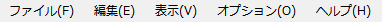
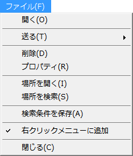
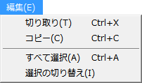
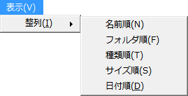
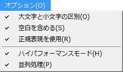
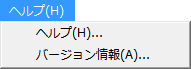

選択されたファイル／フォルダをWindowsの規定のアプリケーションで開きます。
選択されたファイル／フォルダをWindowsの送るメニューに登録されたリンクへ送ります。
但し、表示される一覧はエクスプローラの[送る]で表示される一覧と異なる場合があります。
又、送る動作はエクスプローラの[送る]とは異なる場合があります。
選択されたファイル／フォルダを削除します。
選択されたファイル／フォルダのプロパティを表示します。
Windows XPの場合、複数選択されている場合は、一番上のファイル／フォルダが対象になります。
選択されたファイル／フォルダの場所をエクスプローラで開きます。
選択されたファイル／フォルダの場所を検索条件の場所に設定します。
PF File searchを終了します。
ウィンドウ右上の×をクリックするのと同じです。

選択されたファイル／フォルダをクリップボードにカットします。
切り取りを実行すると選択されたファイル／フォルダは一覧から削除されますが、ファイル／フォルダ自体は削除されません。
選択されたファイル／フォルダをクリップボードにコピーします。
一覧のファイル／フォルダを全て選択します。
一覧のファイル／フォルダの選択／非選択を逆にします。

ファイル／フォルダの一覧を指定した条件で並び替えます。
※更新日時順になります。
もう一度同じ条件を選択すると降順と昇順が切り替わります。

検索の方式を変更します。クリックするとチェックが入ります。
チェックが入っているものが有効になります。
検索条件の名前の大文字と小文字を区別します。
検索条件の名前の空白を文字として検索します。
このオプションを有効にするとファイル名として使用可能な全ての文字を検索出来ます。
検索条件の名前に正規表現を使用します。クエリが正しくないと検索を実行出来ません。
使用出来る正規表現は.NET Frameworkの仕様（下記リンク）を参照して下さい。
マイ コンピュータを検索時にドライブ毎に並列で検索をします。
マルチコア向け機能です。検索結果はドライブ順にはならず、ヒットした順になる為、必要に応じ整列して下さい。
並列処理は、Windowsで認識されているドライブレター（C: D:等）毎に実行されます。
パーティションにより分割された同一ドライブがある場合（例えば、C:とD:が同じ物理ドライブ）、1つの物理ドライブに対し並列に処理を行う為、逆にパフォーマンスが低下するばかりでなく、ドライブに負荷を掛ける恐れがあります。
この様な環境の場合、並列処理は無効にして下さい。
検索結果を逐一表示させず、検索終了時にまとめて表示します。
ファイル一覧ビューの表示の負荷が掛からない為、ヒット数が多い場合に検索速度が向上します。
